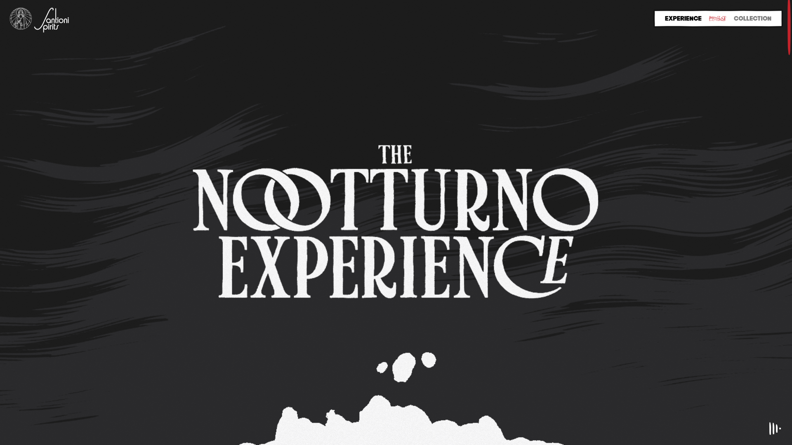
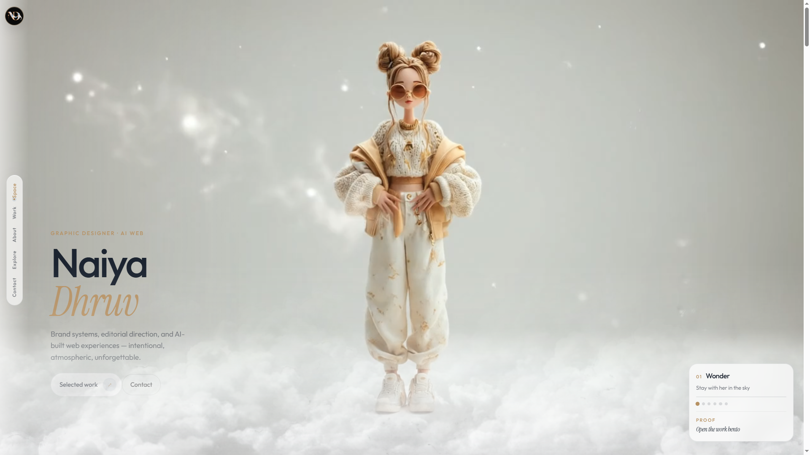
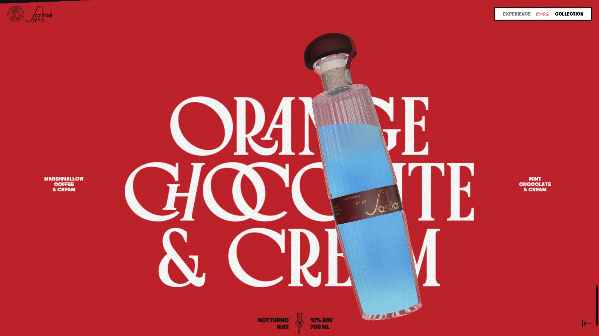
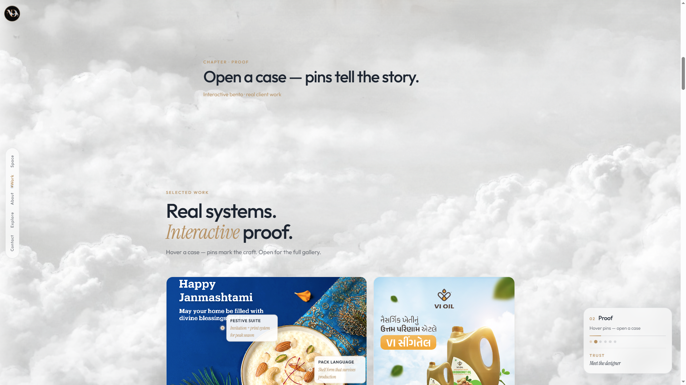

Design critique · Cloud Studio × Notturno
What Santioni has that you don’t — yet
Ruthless read: Santioni is a single obsessive world. Your site is a beautiful studio with too many announcers. Steal their discipline, not their dark luxury skin.
They win on commitment
One story. Giant type. Object over UI. Almost no chrome. You win on hire-me clarity + living sky — lose on silence, scale, and restraint.
Santioni — Charles Rosie · PP Nikkei Maru · GT Era · #1d1d1d · full-bleed red product fields · WebGL comic
Naiya — Outfit · Instrument Serif · gold #d4b48a · high-key sky · glass chrome · bento proof




The gaps
They obsess. You narrate.
Santioni: one night, one line, one comic. You: chapter labels + StoryGuide + bridges + kickers explain the film while the film is playing. Explanation kills wonder.
Their letters are the product. Yours are polite.
Display type at viewport scale with custom locks (interlocked O’s). Your Outfit/serif pairing is clean — but never dangerous. One word per chapter should feel carved, not set.
They have 3 UI things. You have a cockpit.
Logo + 2-tab pill + audio. You stack side nav + StoryGuide + chapter bridge + meta lines (“Chapter · Proof”, “Selected work”, “Interactive bento…”). Triple labeling = portfolio dashboard.
Thing over interface
Bottle / figure sits on top of type, full-bleed, tilted, unavoidable. Your work lives in rounded cards with padding — albums, not objects. Pins are smart; the frame is still “UI card.”
Courage vs. climate control
They punch one saturated field (red) and let it own a whole view. You stay soft white/gold everywhere — cohesive, safe, forgettable mid-scroll. Cloud Studio can stay high-key and still earn one hard color beat.
Entrance as brand theater
Age gate is a type composition, not a checkbox. Your loader is closer to a spinner with a logo. Ritual should feel like opening the studio door — silence, seal, then sky.
Sound is atmosphere
They score the scroll. You’re silent. Even a whisper of wind/room tone would make Cloud Studio feel inhabited — optional toggle, not auto-blast.
Steal this (keep Cloud Studio)
-
01
One label per chapter Kill bridge + kicker + StoryGuide saying the same beat. Pick one companion chrome — not both side nav and StoryGuide fighting.
-
02
Featured case = object through type Before the bento: one full-bleed cover with the title under/through the image (Santioni product pattern), then the grid. Cards second, spectacle first.
-
03
Make one word per section huge Instrument Serif italic already exists — scale it until it feels reckless. Secondary copy gets quieter, not louder.
-
04
One color punch Keep sky high-key. Add a single decisive field (ink dusk, deep indigo wash, or a craft board that floods) so mid-scroll isn’t climate-controlled beige forever.
-
05
Entrance as seal Longer quiet logo hold. No busy progress theater. Gate the avatar reveal like they gate the night.
-
06
Fewer glass rectangles Media planes edge-to-edge. Glass only for chrome that must float. If a border can die, kill it.
Do not copy
Dark mode by default · WebGL comic budget · liquor brand swagger · red-everywhere. Your world is Cloud Studio. Steal ruthlessness of focus — stay luminous.